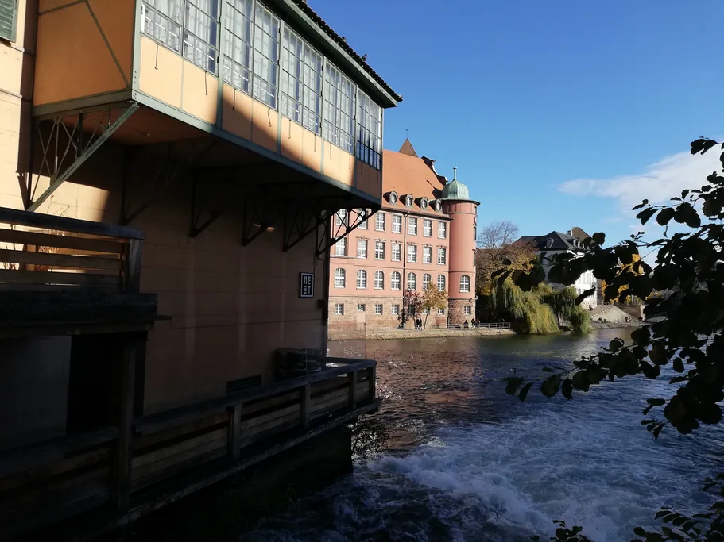

Ainda a planear a viagem toda? Comece pelo nosso guia completo de Estrasburgo e volte aqui para a caminhada.
Aqui fica então uma volta gratuita de cerca de noventa minutos. Passa pelas quatro coisas que as pessoas lamentam ter perdido e acaba onde vai querer jantar. Tire uma captura de ecrã e siga: todas as ruas, pontes e esplanadas por onde passa são públicas.
Não é o nosso audioguia, e não vamos fingir o contrário. O audioguia da TouringBee por Estrasburgo, ao seu ritmo é outra coisa: dura cerca de duas horas e meia, começa lá atrás na estação e atravessa a cidade numa ordem pensada para quem narra, não para quem lê um mapa. Esta página é a versão curta, que faz com o telemóvel no bolso e nada nos ouvidos. A longa fica desde €9,99, se decidir que a quer.
Vá ao fim do dia. A catedral fecha das 11:15 às 12:45, o relógio toca às 12:30 e o sol baixo deixa o grés mesmo cor-de-rosa depois das 16:00. Ficar na Grande Île é começar a volta à sua porta.
Num relance
- A volta — cerca de 3 km, uns 90 minutos a um ritmo que deixa olhar para as coisas
- Início e fim — Place de la Cathédrale. É circular: volta ao mesmo sítio
- Custo — €0. Todas as ruas, praças, pontes e esplanadas do percurso são gratuitas
- Melhor hora — comece por volta das 16:00, mais cedo no inverno
- Nave da catedral — grátis. Seg.–sáb. 08:30–11:15 e 12:45–17:45, dom. 14:00–17:15
- Piso — calçada quase todo o caminho. Não é dia para sapatos novos
- Se quiser a versão longa — 33 paragens, cerca de 2,5 horas, 8 idiomas, desde €9,99
Três formas de percorrer Estrasburgo a pé, comparadas com honestidade

Cruzeiro no Ill em Estrasburgo Hora marcada
Procure «strasbourg walking tour» e está a escolher entre três coisas que nem sequer competem no mesmo plano.
Uma visita guiada em grupo dá-lhe uma pessoa a quem perguntar. Também anda a relógio fixo — sai às 10:00, regressa às 12:00 —, por isso, se o grupo se demorar em Petite France, sobram-lhe quatro minutos nos Ponts Couverts.
Uma visita gratuita a troco de gorjeta não custa nada para entrar e os guias são muitas vezes muito bons. Também vivem dessa gorjeta: os grupos são grandes, vai ficar atrás com o ouvido esticado, e o envelope no fim sai mais ou menos por aquilo que custaria uma visita paga barata.
Um audioguia ao seu ritmo não tem ninguém a quem perguntar. É essa a troca, e é uma troca a sério. Em contrapartida, começa quando quer, faz uma pausa para almoçar e repete o trecho que não estava a ouvir.
| Audioguia ao seu ritmo | Visita guiada em grupo | Visita a troco de gorjeta | |
|---|---|---|---|
| Preço | Desde €9,99 uma vez, um ano de acesso, as voltas que quiser | Por pessoa e por partida | Entrar é grátis, espera-se gorjeta |
| Ritmo | O seu — pare, coma, divida por dois dias | Início e fim fixos | Fixo e quase sempre rápido |
| Tamanho do grupo | Você e quem levar consigo | Normalmente 10–25 | Muitas vezes mais de 25 |
| Idiomas | 8 — EN, FR, DE, ES, IT, PT, PL, RU | O que o guia falar nesse dia | Normalmente inglês ou francês |
| Mau tempo | Adie, não perde nada | Pagou aquele horário | Desconfortável |
Quer uma pessoa? As visitas e cruzeiros em Estrasburgo reservam-se num instante. Quer a cidade ao seu relógio? Continue a ler.
A volta gratuita de noventa minutos

Faça-a por esta ordem. Foi montada a partir da luz, de trás para a frente: sai da praça da catedral enquanto ainda está cheia, passa a hora dourada à beira de água e regressa quando a fachada já está cor-de-rosa e a multidão foi jantar.
1. Place de la Cathédrale — dez minutos e siga. Afaste-se bem, até à esquina da Rue Mercière, ou não consegue ver o topo. 142 metros: entre 1647 e 1874 nada construído por mãos humanas foi mais alto. A torre sul nunca foi acabada — acabou o dinheiro — e é essa silhueta torta que faz reconhecer Estrasburgo em qualquer fotografia. A nave é gratuita; a plataforma são 330 degraus e €10, o relógio €3 às 12:30, e os dois bilhetes vendem-se só no local. Se vai entrar, entre agora. Depois afaste-se da praça. Vai voltar.
2. Rue Mercière e Place Gutenberg — dez minutos. A Rue Mercière é a fotografia de postal, e resulta melhor do fundo da rua a olhar para trás, não a meio dela. Desemboca na Place Gutenberg, o antigo mercado verde, onde ficam as casas de banho públicas e onde a praça deixa de ser sobre a catedral.
3. Descer à água no Pont du Corbeau — quinze minutos. Passe para a margem sul e siga para oeste ao longo do cais. É o troço que a maioria salta, e é aquele em que deixa de andar dentro de um monumento e começa a andar dentro de uma cidade: barcaças, as traseiras das casas, o matadouro de 1588 que hoje é o Musée Historique e o Palais Rohan logo atrás. Os museus custam €7,50 cada ou €16 o passe de dia; o Musée Alsacien está fechado para obras até 1 de junho de 2028.
4. Petite France — vinte e cinco minutos, mais se se sentar. Volte a atravessar pela ponte pedonal e siga a água até ao bairro dos curtidores. Olhe para os telhados: aquelas filas de janelinhas não são enfeite e, mal dê pelo padrão, encontra-o em mais quatro casas. Se o Pont du Faisan começar a rodar, pare e veja — abre-se de lado para deixar passar os barcos e demora cerca de três minutos. Entre as 11:00 e as 17:00 estes são os 200 metros mais cheios da cidade; às seis esvaziam.
5. Ponts Couverts e o terraço do Barrage Vauban — quinze minutos. Não salte esta parte. Quatro torres quadradas de pé dentro de água; a barragem logo a seguir ficou pronta em 1688 como obra de engenharia militar, não como enfeite. Suba ao terraço. É gratuito, tem elevador além das escadas, e é a melhor vista de Estrasburgo que não custa nada: os Ponts Couverts à frente, a flecha da catedral atrás, a ilha inteira pelo meio. A única vista melhor custa €10 e 330 degraus.
6. De volta para leste pela Rue des Moulins — quinze minutos, ou duas horas se comer. Quase todos os edifícios da rua são restaurantes. Peça baeckeoffe — três carnes em camadas com batata e cebola, seladas sob uma tira de massa e cozidas devagar —, uns €18–22 numa winstub, a taberna de vinhos alsaciana, aqui ao lado. As cozinhas funcionam sobretudo das 12:00 às 14:00 e das 19:00 às 21:30, por isso chegue às sete ou conte esperar. Depois suba outra vez à praça da catedral e olhe de novo para a fachada. Com esta luz é outro edifício, e a praça está finalmente calma.
É esta a volta. O que ela deixa de fora de propósito é quase toda a história da cidade: quem viveu naquelas casas, para que serviam as torres, de onde veio o nome do bairro e porque é que na praça há sempre vento. Nada disso está escrito numa placa. É por isso que existe a versão longa.

Audioguia de Estrasburgo ao seu ritmo Acesso imediato
Quanto custa mesmo esta caminhada
Nada, a não ser que entre nalgum sítio:
- A volta em si — €0, incluindo o terraço do Barrage Vauban e a nave da catedral
- Relógio astronómico — €3 adulto, €2 reduzido, bilhetes só no próprio dia
- Plataforma da torre — €10 adulto, €6 reduzido, venda só no local, 330 degraus
- Museus municipais — €7,50 cada, ou €16 o passe de dia
- Jantar na Rue des Moulins — €18–22 um prato principal, menos à hora de almoço
- A versão em áudio — desde €9,99 uma vez, um ano de acesso
Quando fazer a volta

Hora do dia. Comece por volta das 16:00 de março a outubro, por volta das 14:00 no inverno. Fica com a água em boa luz e com a praça da catedral duas vezes: uma cheia, outra vazia.
Prefere de manhã? Então inverta a ordem — Petite France antes das 09:30 é quase só sua, e a luz bate na madeira em vez de ficar atrás dela.
Época. A primavera e o início do outono são a resposta fácil. Em dezembro a volta atravessa o mercado de Natal: o Christkindelsmärik existe desde 1570 e ocupa quase todas estas praças, da última semana de novembro a 24 de dezembro. Veja o nosso guia do mercado de Natal.
Chuva. A volta tem exatamente dois telhados: a galeria do Barrage Vauban e a nave da catedral. Reorganize-a à volta deles e um dia molhado continua a funcionar.
O audioguia
Esta página dá-lhe uma volta curta. O audioguia da TouringBee por Estrasburgo, ao seu ritmo dá-lhe a longa: outro trajeto, outra ordem e uma voz a explicar o que está a ver enquanto está parado à frente daquilo.
- 33 paragens ao longo de cerca de 2,5 horas, gravações de 1–3 minutos cada
- Desde €9,99, um pagamento, um ano de acesso, sem mensalidades
- 8 idiomas — inglês, francês, alemão, espanhol, italiano, português, polaco e russo
- Totalmente sem Internet depois de descarregado — sem roaming, sem andar à procura de Wi-Fi
- Como funciona o mapa: a aplicação mostra um mapa GPS sem Internet com a sua posição, para saber sempre onde está e o que vem a seguir. Não toca sozinha. É você que inicia a gravação ao chegar.
- Tem 4,7 na App Store e no Google Play; 4.664 viajantes já ouviram um percurso da TouringBee
«Tenho 64 anos e viajo sozinha. Andei pela cidade de Estrasburgo o dia inteiro com este guia, com pausas no quarto do hotel sempre que precisei. É flexível e ao mesmo tempo completo. A duração da gravação em cada uma das 33 paragens era a certa (2–3 minutos).»
— Reiko_T, GetYourGuide, setembro de 2025
Quero o audioguia de Estrasburgo — desde €9,99
Pronto para caminhar?
Comece na catedral por volta das 16:00 e a volta devolve-o à praça com melhor luz.
Perguntas frequentes
Quanto tempo demora um percurso a pé por Estrasburgo?
A volta gratuita desta página leva cerca de 90 minutos a passo normal, uns 3 km. Um percurso completo pelo centro antigo, ao seu ritmo, demora cerca de 2,5 horas. Junte uma hora para o interior da catedral, ou um dia inteiro com museus e um almoço demorado.
Posso percorrer Estrasburgo de graça?
Por completo. Todas as ruas, praças, pontes e miradouros desta volta são gratuitos, incluindo o terraço do Barrage Vauban e a nave da catedral. Só os extras custam dinheiro: a plataforma da torre (€10), o relógio astronómico (€3) e os museus municipais (€7,50 cada).
Qual é o melhor ponto de partida?
A Place de la Cathédrale, porque toda a gente a encontra e porque a volta foi feita para o trazer de volta a ela com melhor luz. Se começar antes na estação, ande cinco minutos para leste até à água e apanhe a volta em Petite France.
Estrasburgo dá para andar a pé?
Dá, como poucas cidades. O centro histórico ocupa uma única ilha e é quase todo pedonal, por isso não vai precisar de elétrico nem de táxi em ponto nenhum deste trajeto. Atenção às bicicletas, mais do que aos carros: Estrasburgo tem mais de 560 km de ciclovias e quem cá vive pedala depressa.
Preciso de reservar uma visita guiada?
Não. Nada nesta volta precisa de guia para entrar. Reserve uma se quiser mesmo ter alguém a quem fazer perguntas; caso contrário, um audioguia ao seu ritmo cobre muito mais terreno e sem hora de partida fixa.
O audioguia é ativado por GPS?
Não, e preferimos dizê-lo com todas as letras. A aplicação mostra um mapa sem Internet com a sua posição, para saber sempre onde está e o que vem a seguir — mas é você que inicia cada gravação ao chegar à paragem. Nada toca sozinho.
Posso fazer esta caminhada no inverno?
Pode, e em dezembro atravessa o mercado de Natal. Comece mais cedo, por volta das 14:00, porque a luz vai-se às quatro e meia.
Continue a explorar
- Guia completo de Estrasburgo — quando vir, onde ficar, quanto custa tudo
- Um dia em Estrasburgo — o dia inteiro, com almoço, barco e um plano para a noite
- Petite France — o bairro em detalhe e como fotografá-lo sem multidão
- Catedral de Estrasburgo — horários, a subida, o relógio e o que há para ver lá dentro
- O centro antigo e a Grande Île — porque é a ilha inteira que está na lista da UNESCO

O Eugene vive em França há 16 anos e trabalhou como guia turístico antes de fundar a rede de conteúdos de viagem paris10.travel. Escreveu o audioguia da TouringBee sobre Estrasburgo.
Todos os preços e horários desta página são verificados na fonte oficial do ano em curso. Quando um dado ainda não foi publicado, dizemos isso em vez de adivinhar.
Alguns dos links desta página são de afiliados (GetYourGuide, Booking.com, SNCF). Se reservar através deles, podemos receber uma pequena comissão, sem custo adicional para si. Isso nunca influencia o que recomendamos.